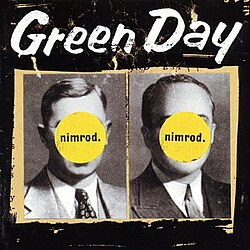

Green Day is an American rock band formed in Rodeo, California, in 1987 by lead singer and guitarist Billie Joe Armstrong and bassist and backing vocalist Mike Dirnt, with drummer Tré Cool joining in 1990. I like multiple songs from Green Day, but for now this page will only contain one of their albums; Nimrod. Nimrod is a 1997 album released by Green Day. This page shows what songs it contains, along with which one my favorite is.

Here's a video preview of Uptight
Otherwise, here's an audio player.
Your browser does not support the audio element.